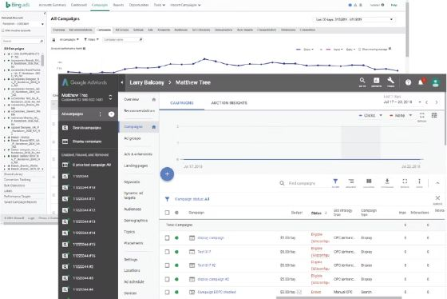
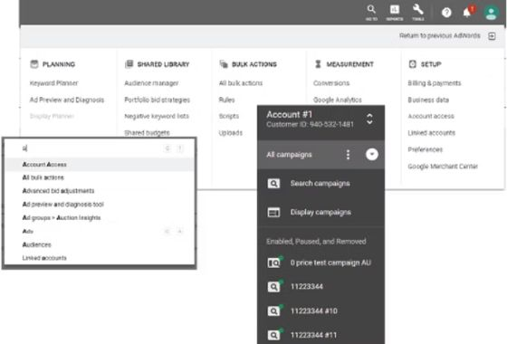
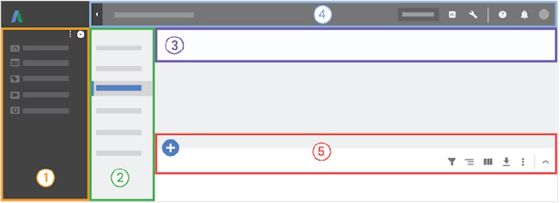
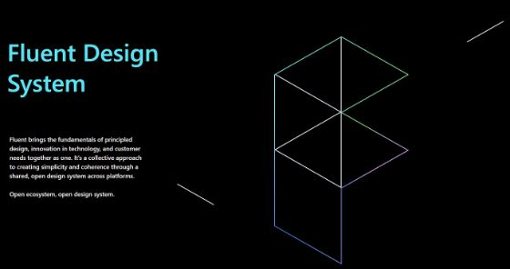
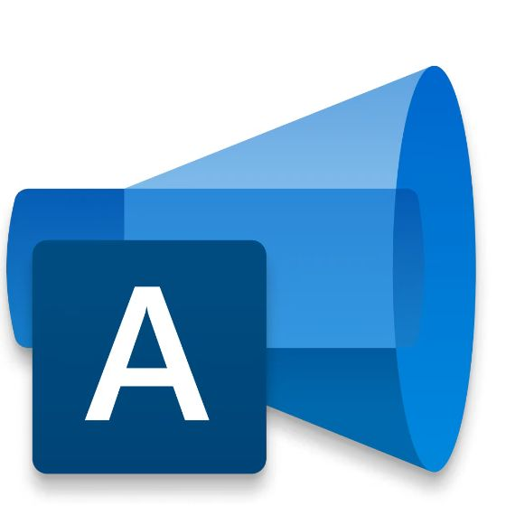
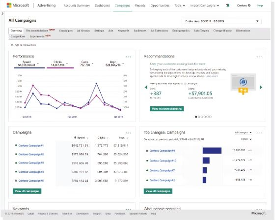
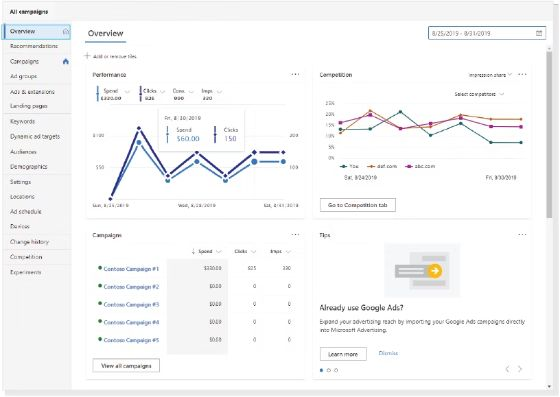
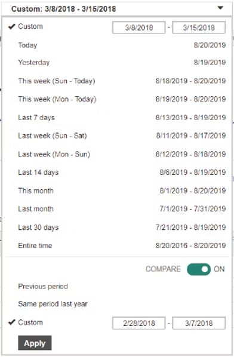
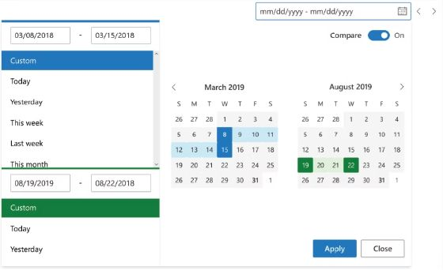
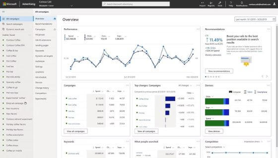

Microsoft Advertising Rebrand & redesign
In 2019, Bing Ads announced a rebranding and redesign effort to become Microsoft Advertising. This change was inspired by rising changes in the market as Facebook Ads and Instagram Ads began to inspire the future of ad management experiences; additionally, Google Ads presented a full redesign of their product utilizing Material Design with a new focus on navigation changes and mobile.
- Team
- 2 designers
1 researcher
4 program managers
2 content strategists - Role
- Designer
- Year
- 2020
“How might we provide our advertisers with a modern and accessible ad management experience utilizing Microsoft’s Fluent design while maintaining familiarity with users from Google Ads?”
Research
There were several factors that inspired Bing Ads to pursue not only rebranding itself as a product, but to also undergo a complete overhaul of the front-end experience — first and foremost, the competitive landscape. Our surveys illustrated that users didn’t readily associate Bing Ads as a Microsoft product, unlike Facebook Ads and Google Ads, whose branding directly tied to the companies that served them. Microsoft Advertising was a needed change, both for our users on the Bing platform and to begin integrating our service into more of the Microsoft ecosystem. I worked closely with our marketing and content strategy partners to create new help and onboarding material, and as design lead for the account & billing space, scoped this work into several phases so we could make incremental change without disrupting advertisers’ ability to run their business.

The rebrand paired with a company-wide push to adopt the Fabric/Web Fluent design system already used by Office and Windows, which opened the door to more cross-platform collaboration. Google Ads had introduced Material Design in 2018, and since a majority of our users also used Google Ads, staying familiar mattered — we studied their five major navigation reorganizations (primary navigation, secondary navigation, contextual awareness, account switching, and grid data management) as heuristic inspiration, without simply following Google down the Material Design path.


Design implementation
Adopting web Fluent meant peeling back the layers of the product and rebuilding with accessibility and responsiveness in mind. We audited the entire product to find gaps, inconsistencies, and functional failures. Alongside another designer, I led the effort to align our design guidelines and build a process for sharing assets more easily with our team and developer partners, using an atoms/molecules/organisms approach to reevaluate our human interface guideline documentation.

Inclusive design meant more than color contrast — it meant robust interactive states for keyboard tabbing and screen readers, reformatted content for reflow and responsive scenarios, aria labels for images and content, and usability studies that recruited participants with accessibility needs. I drove presentations and knowledge-sharing on keeping accessibility in mind as we built, which ultimately reduced churn and duplicate work across the design process.

The new Microsoft Advertising app icon, part of the rebrand from Bing Ads.
Results
The feedback was clear, and we delivered on these benefits:
- Better tools to help improve effectiveness and save time
- Confidence to test campaign changes
- Ability to drive customers to immediate action
- Clearer insight on ad performance with prominent metrics
- Multi-account management with clear, contextual, actionable notifications
- Easier resolution of payment problems
- Healthier accounts through AI-powered recommendations
Before

After

Account overview: left-hand navigation replaced the old top bar, and performance data moved into clearer, scannable cards.
Before

After

The date range picker gained a visual calendar and a clearer comparison toggle.
